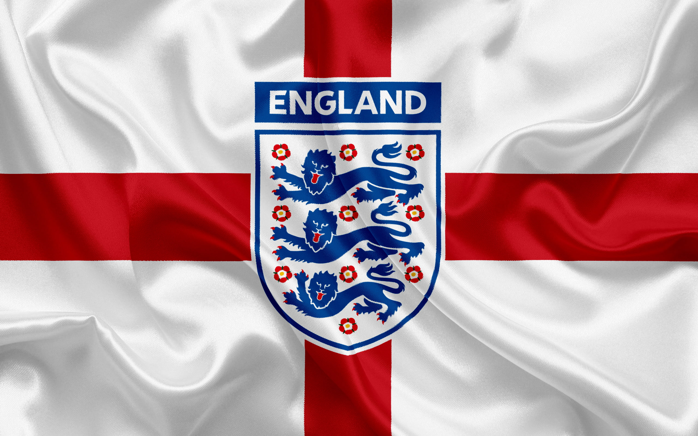
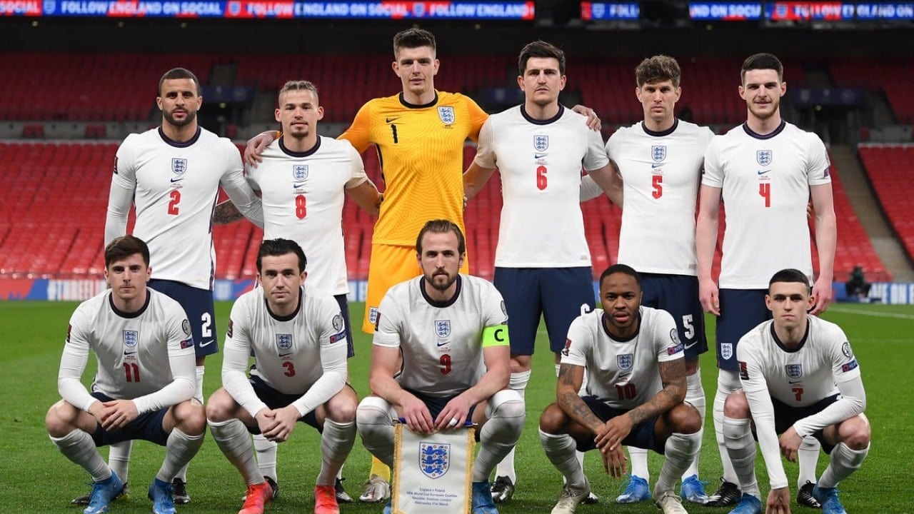

Nessa página veremos um pouco sobre a Inglaterra na copa do mundo.
também veremos um pouco sobre os costumes da Inglaterra
Inglaterra
A Inglaterra pode finalmente dar o passo final na Copa do Mundo de 2022 no Catar? A equipe chegou muito perto do título na Euro 2021. Em Wembley, a equipe do técnico Gareth Southgate só perdeu por 4-3 para a Itália, nos pênaltis, na final. Os Três Leões não perderam nenhuma de suas primeiras oito partidas e assim se classificaram logo cedo para as finais. Mas isto incluiu o surpreendente empate de 1-1 contra a Polônia e a Hungria. É um velho problema inglês: se a equipe não estiver totalmente no jogo, o desempenho cai significativamente. Se Southgate quiser celebrar o sucesso com sua equipe na Copa do Mundo 2022 no Catar, ele terá que nomear um esquadrão da Inglaterra de primeira classe. Apresentamos a provável seleção da Inglaterra, inspirada nas impressões dos últimos dois anos. Também fazemos uma avaliação de quem provavelmente serão aos onze dos Três Leões.
A Seleção da Inglaterra para a Copa do Mundo 2022
O chefe da equipe, Southgate, é conhecido como o jogador que perdeu o pênalti contra a Alemanha nas semifinais da EURO 1996, o que viria significar o fim dos Três Leões no torneio. Treinador desde 2006, ele assumiu o Middlesbrough FC por três anos, mas ficou sem emprego por um longo tempo.
No Campeonato Europeu, ele deixou seu time jogar quase todos os jogos em um ‘4- 2-3-1’ e suspeitamos desse sistema também nas finais. O primeiro sistema alternativo de Southgate também é um ‘4-3-3’ ofensivo, que fornece apenas algumas mudanças para o ‘4-2-3-1’. Assim, nomeamos o “nosso” plantel de acordo com esta exigência, tão bem praticada nos Campeonatos da Europa.